1 未選擇 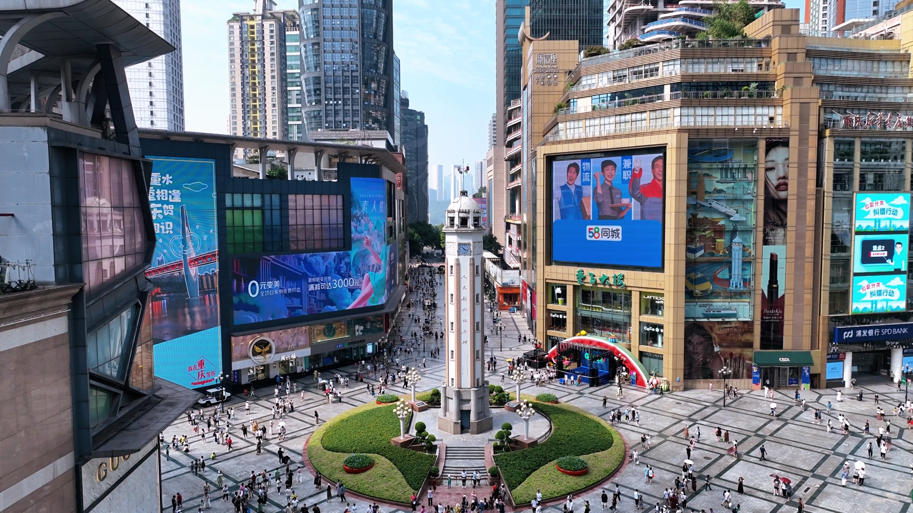 1. 解放碑 解放碑全稱「重慶人民解放紀念碑」，位於重慶市渝中區商業核心地帶，是重慶最具代表性的精神地標與繁華商圈。這座紀念碑見證了歷史的更迭，如今周邊高樓林立、名牌雲集。作為重慶旅遊的第一站，這裡不僅是感受山城現代化都市魅力的絕佳去處，也是各路交通與步道的交會點，展現著新舊時代交織的獨特張力。 加入我的行程 (8選1) 觀看熱門介紹影片 查看導航地圖
2 未選擇 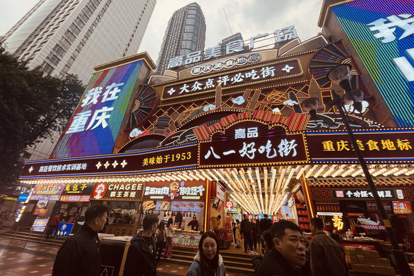 2. 八一美食街 緊鄰解放碑的八一美食街，是重慶饕客與老饕的朝聖天堂。一條街匯聚了最地道的山城風味，從酸辣過癮的好吃狗酸辣粉、外酥內糯的重慶小湯圓，到香氣四溢的現炸酥肉與各式麻辣串串。這裡終年人潮湧動，空氣中餚漫著濃郁的辣椒與花椒香氣，是體驗重慶「熱辣」飲食文化、滿足味蕾渴望的必訪之地。 加入我的行程 (8選1) 觀看熱門介紹影片 查看導航地圖
3 未選擇 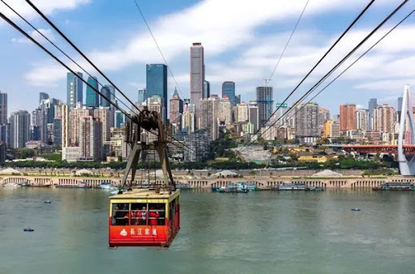 3. 長江索道 被譽為「萬里長江第一條空中走廊」的長江索道，是重慶獨有的魔幻交通工具。索道全長約1166公尺，連結渝中區與南岸區。凌空飛渡大江之上的纜車，讓遊客能以極具震撼力的360度視角，俯瞰滾滾長江江水與兩岸錯落有致的摩天大樓。無論是白天的壯麗江景，還是夜晚燈火輝煌的極致夜色，皆美不勝收。 加入我的行程 (8選1) 觀看熱門介紹影片 查看導航地圖
4 未選擇 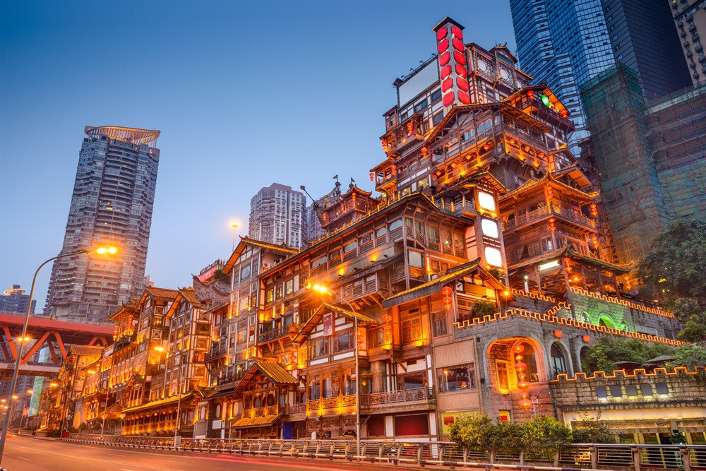 4. 洪崖洞 洪崖洞憑藉著依山而建的傳統「吊腳樓」建築群而聞名全球，神似動畫《神隱少女》中的湯屋場景。每當夜幕低垂，整座依傍懸崖的建築點亮璀璨金黃的燈火，層層疊疊、如夢似幻。這裡巧妙地利用了重慶獨特的高差地形，形成「一樓是馬路，十一樓落客也是馬路」的魔幻景觀，是山城無可爭議的視覺圖騰。 加入我的行程 (8選1) 觀看熱門介紹影片 查看導航地圖
5 未選擇 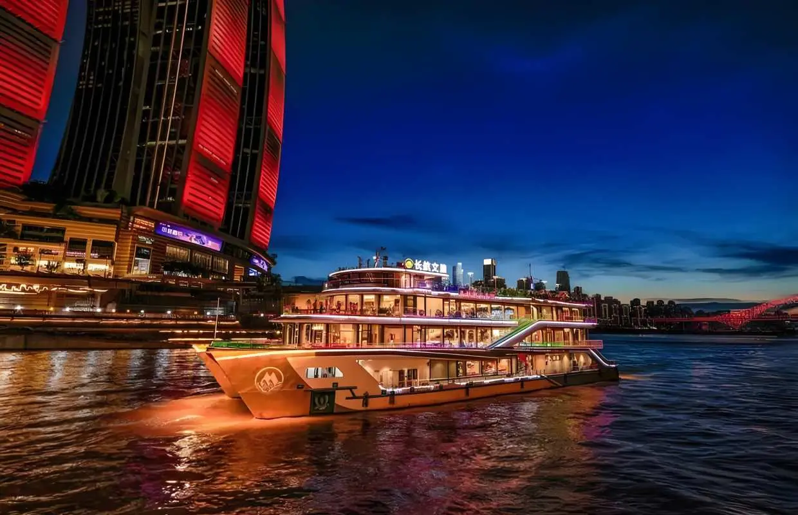 5. 重慶兩江遊夜景遊船 搭乘兩江夜遊船從江面仰望洪崖洞，能解鎖截然不同的震撼視角。遊船緩緩行駛於長江與嘉陵江的交匯處，涼爽江風拂面而來，沿途除了能將整座洪崖洞的金色立體外觀收進眼底，更能飽覽千廝門大橋、兩岸摩天大樓群的動態燈光秀。江水倒映著城市霓虹，如同一幅流動的賽博朋克畫卷，極具視覺衝擊力。 加入我的行程 (8選1) 觀看熱門介紹影片 查看導航地圖
6 未選擇 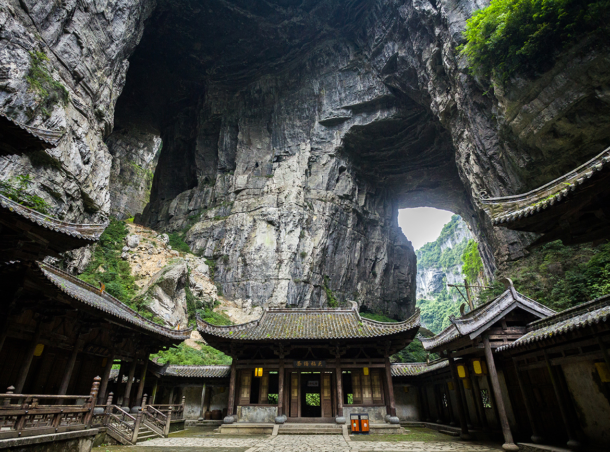 6. 武隆天生三橋 位於重慶武隆的世界自然遺產「天生三橋」，是罕見的喀斯特地形奇觀。景區內天龍橋、青龍橋、黑龍橋三座氣勢磅礡的天然石拱橋橫跨在幽深的天坑之上，規模宏大、氣勢凌人。這裡也是知名電影《變形金剛4》與《滿城盡帶黃金甲》的取景地。置身在幽深靜謐的天坑底部古驛站中，能深刻體會到大自然的鬼斧神工。 加入我的行程 (8選1) 觀看熱門介紹影片 查看導航地圖
7 未選擇 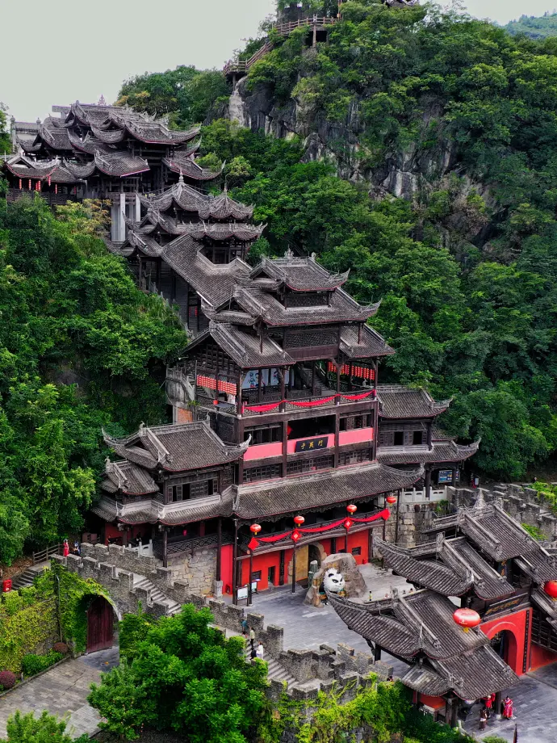 7. 蚩尤九黎城 座落於彭水縣的蚩尤九黎城，是中國最大的苗族傳統建築群與文化展示基地。景區內依山而建的九道門、九黎宮、蚩尤大殿等木結構建築氣勢宏偉，打破多項世界紀錄。這裡完整傳承並展示了苗族的歷史始祖蚩尤文化、傳統祭祀儀式、銀飾刺繡與獨特的吊腳樓工藝，是一場充滿神祕色彩與人文底蘊的文化盛宴。 加入我的行程 (8選1) 觀看熱門介紹影片 查看導航地圖
8 未選擇 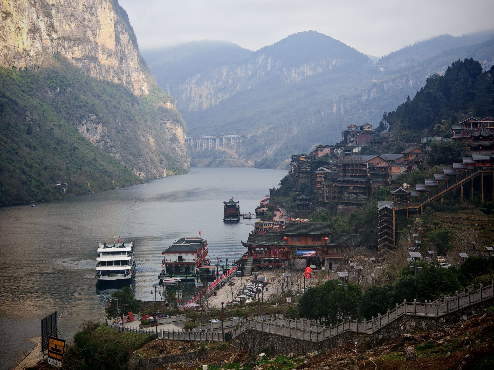 8. 乘船遊烏江畫廊 「山似碧玉簪，江如青羅帶」，這是對烏江畫廊最完美的寫照。乘船順流而下，兩岸奇峰對峙、翠巒疊嶂，鬼斧神工的峽谷地形在飄渺的煙雨中宛如一幅連綿不絕的水墨山水畫。遠離都市喧囂，唯有碧綠清澈的江水與兩岸偶爾傳來的猿聲鳥鳴相伴，讓人彷彿置身於遠古的世外桃源，體驗極致的沉靜與詩意。 加入我的行程 (8選1) 觀看熱門介紹影片 查看導航地圖
9 未選擇 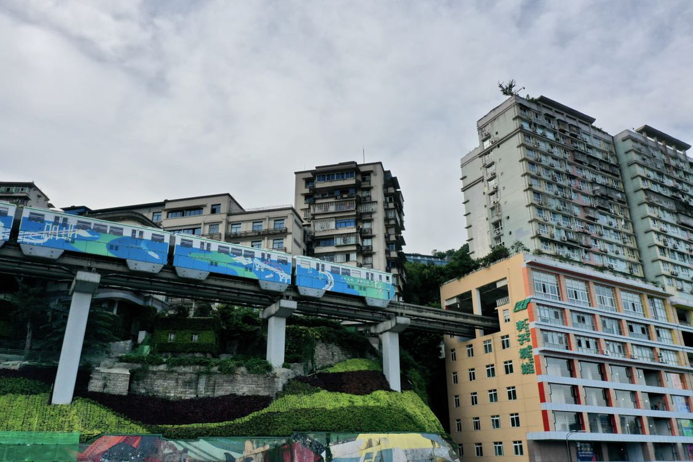 9. 李子坝輕軌穿樓 重慶軌道交通2號線的李子坝站，以「輕軌直接穿過19層居民大樓」的驚奇景觀聞名全球。這種跨座式單軌與民居共生共存的奇特設計，並非先有樓或先有軌道，而是同步規劃設計的工程奇蹟。站在樓下的觀景台，親眼目睹輕軌列車精準無誤地「吞吐」於高樓之中，是體驗重慶立體3D魔幻交通的終極必訪點。 加入我的行程 (8選1) 觀看熱門介紹影片 查看導航地圖
10 未選擇 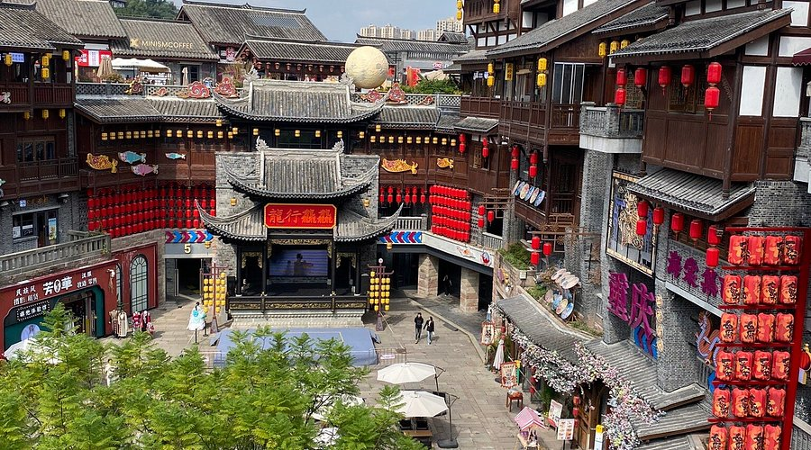 10. 磁器口古鎮 擁有「白日裡千人拱手，入夜後萬盞明燈」美譽的磁器口古鎮，座落於嘉陵江畔，是重慶主城區內歷史悠久的千年古鎮。這裡曾是繁華的瓷器對外轉運碼頭，至今仍完整保留了明清時期的徽派及巴渝傳統建築風貌。走在起伏的青石板路上，沿途茶館林立、川劇變臉聲此起彼落，更有現做麻花與香氣撲鼻的陳麻花等在地美食，是體驗「老重慶」市民生活與傳統文化必到之處。 加入我的行程 (8選1) 觀看熱門介紹影片 查看導航地圖
11 未選擇 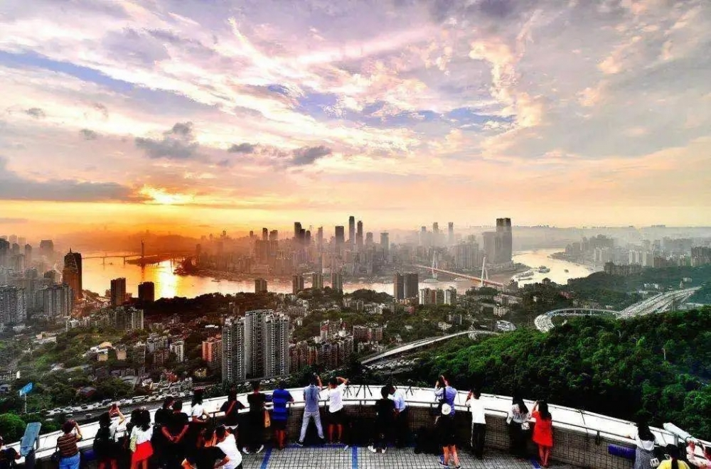 11. 南山一棵樹觀景台 南山一棵樹觀景台位於重慶市南岸區南山半山腰，因保留了一棵多年守護山城的古綠喬木而得名。這裡是俯瞰重慶「山、水、城、橋」立體美景的絕佳制高點。隔江對望高樓密集的渝中半島，當黃昏入夜，兩江環抱的摩天大樓群、錯落有致的吊腳樓與橫跨江面的巨大鋼骨大橋同時點亮霓虹，萬家燈火倒映江面，勾勒出極具震撼力的山城不夜城夜景，堪稱亞洲頂級都市景觀之一。 加入我的行程 (8選1) 觀看熱門介紹影片 查看導航地圖